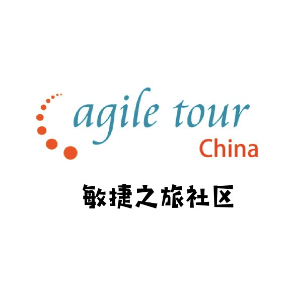
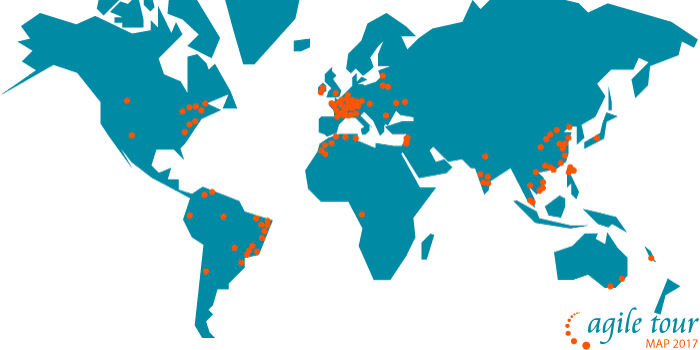
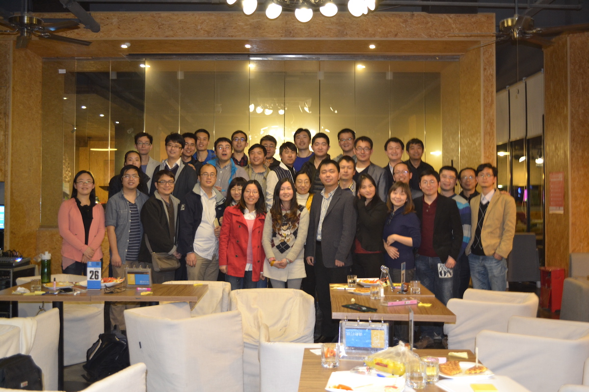
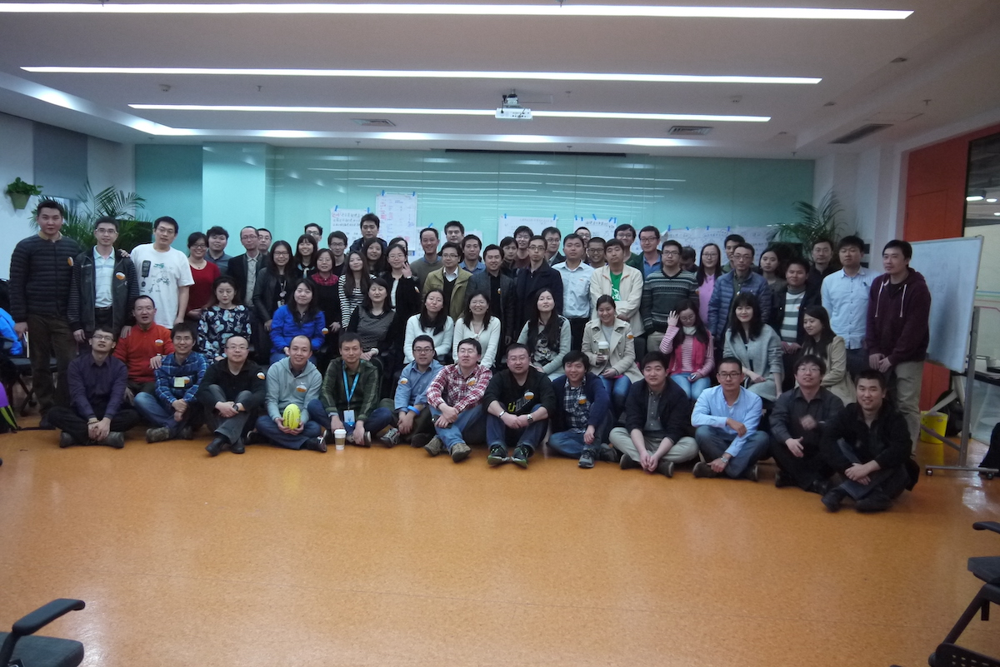
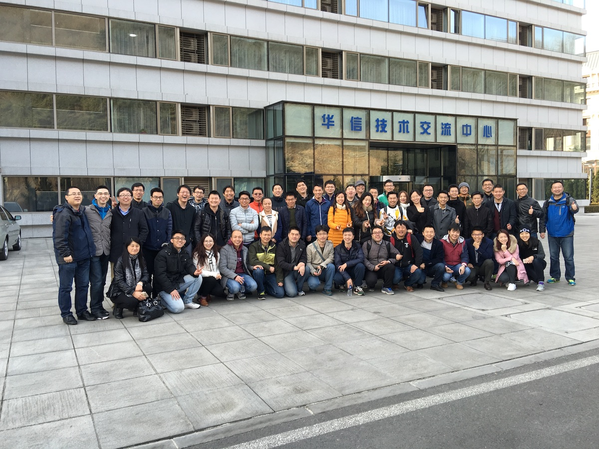
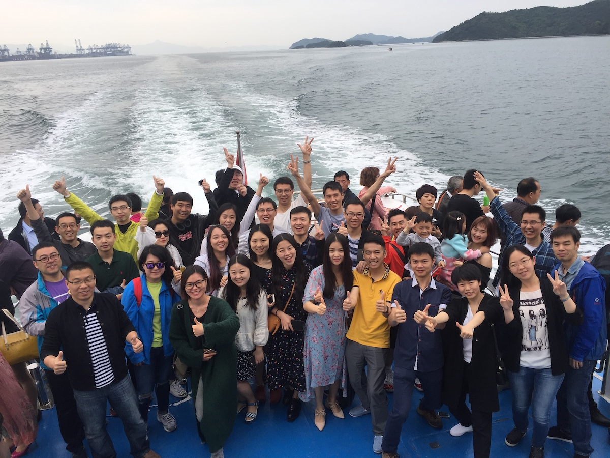
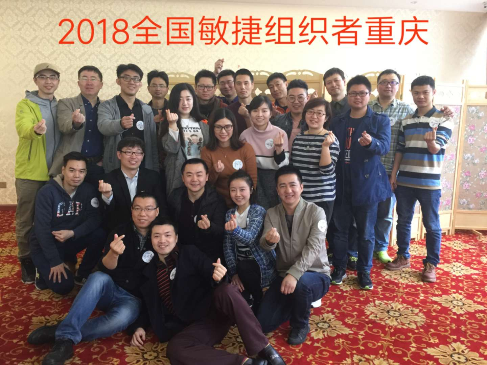
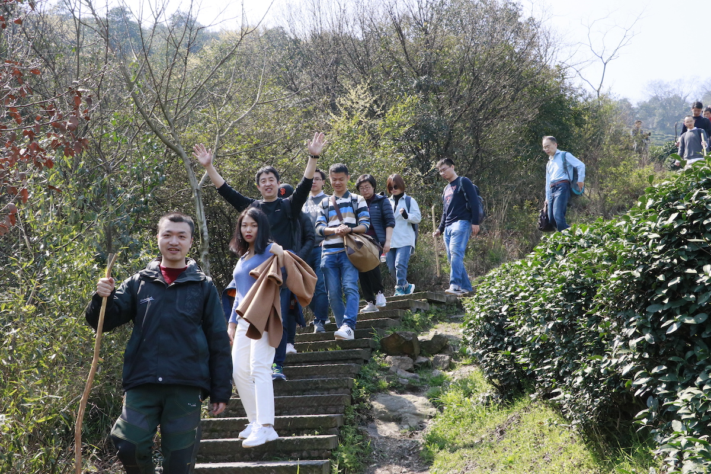
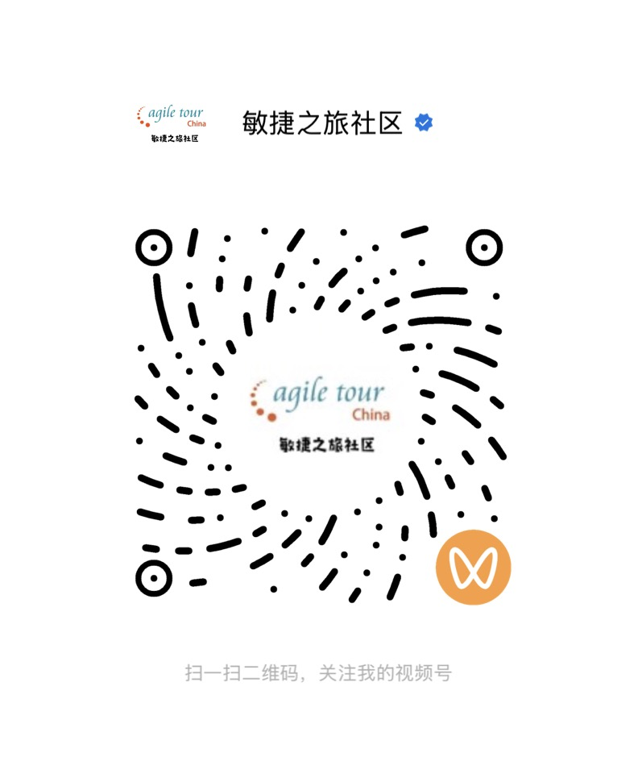

COMMUNITY / 01实践 · 连接 · 成长
AT
ONE COMMUNITYFROM LOCAL TO GLOBAL

SCROLL TO DISCOVER
01 / 我们是谁
一场始于 2009 年的
长期实践。
敏捷之旅致力于在全国各地区推广敏捷实践经验，传播可落地的实践方法，建立一个开放、持续、彼此成就的学习圈子。
15+年持续连接
30+城市社区
∞真实实践分享
02 / 我们在哪里
从一座城市，
到一张世界地图。
每一个橙色坐标，都是一次正在发生的连接。AgileTour 以中国社区为节点，融入全球敏捷实践者网络。

世界各地的实践者，
在同一张地图上相遇。GLOBAL / LOCAL
CONNECTED BY PRACTICE
在同一张地图上相遇。GLOBAL / LOCAL
CONNECTED BY PRACTICE
03 / 我们的共同记忆
每一次聚会，
都让社区更近。
全国敏捷之旅组织者聚会，记录那些关于实践、信任与长期主义的面对面时刻。






04 / 加入我们
把你的实践
带进社区。
关注官方账号，获取活动信息、实践分享与社区动态。也欢迎你发起一场属于自己城市的敏捷之旅。
社区永远为真实的实践留有位置
 官方微信扫描二维码，关注公众号
官方微信扫描二维码，关注公众号
官方视频号扫码观看实践现场